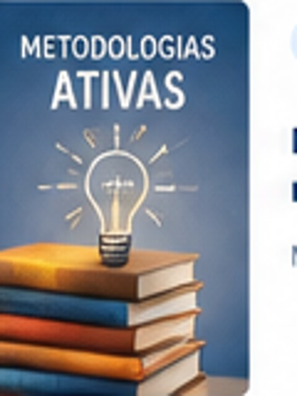
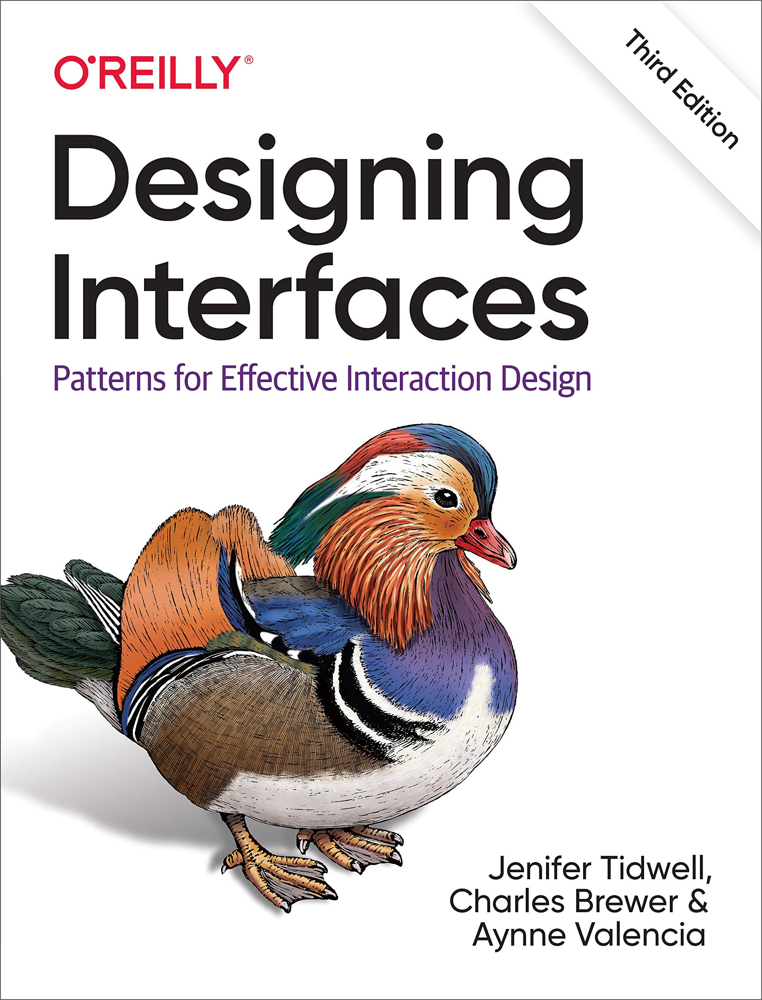

DESENVOLVIMENTO WEB
APRENDER ABRE CAMINHOS
Grandes ideias começam com uma boa leitura.
Descubra conteúdos, explore diferentes áreas do conhecimento e encontre inspiração para sua jornada acadêmica.
Um espaço pensado para apoiar seus estudos
Conhecimento para todosExplore. Aprenda. Evolua.
EXPLORE SEUS INTERESSES
Por onde você quer começar?
Encontre temas que acompanham sua formação e seus objetivos.
SELEÇÃO DE LEITURAS
Conhecimento em destaque
Exemplos de temas para ampliar seu repertório acadêmico.
LÓGICA E CÓDIGO

DADOS E SISTEMAS
DESIGN DIGITALINFRAESTRUTURA
 PROTEÇÃO DIGITAL
PROTEÇÃO DIGITALSEGURANÇA
Segurança da Informação
Boas práticas para proteger dados e ambientes digitais.
Explorar temaNota: os títulos e descrições desta página são exemplos ilustrativos e não representam um catálogo oficial consultável.
Aprendizado contínuo, novas possibilidades
SOBRE A EXPERIÊNCIA
Um ponto de partida para novas descobertas.
A Biblioteca Digital UniFECAF é apresentada neste projeto como um ambiente de navegação para aproximar estudantes de livros, materiais acadêmicos e conteúdos de apoio.
A proposta prioriza uma estrutura clara, categorias fáceis de identificar e uma experiência que se adapta a diferentes tamanhos de tela.
Organização claraSeções e assuntos fáceis de localizar.
Experiência responsivaLayout adaptado para desktop e celular.
Atenção à acessibilidadeTextos alternativos e navegação por teclado.
ESPAÇOS DE APRENDIZAGEM
Estudar também é encontrar seu lugar.
Imagens ilustrativas de ambientes voltados à leitura e ao estudo.
01 / ESTUDO
Concentre-se nas suas ideias

02 / PESQUISA
Descubra novos caminhos

03 / DESCOBERTA
Amplie seu conhecimento
Os ambientes acima são ilustrativos; não identificam endereços ou unidades oficiais da instituição.
O PRÓXIMO CAPÍTULO É SEU
Continue curioso. Continue aprendendo.
Explore os temas em destaque e dê o próximo passo na sua jornada acadêmica.